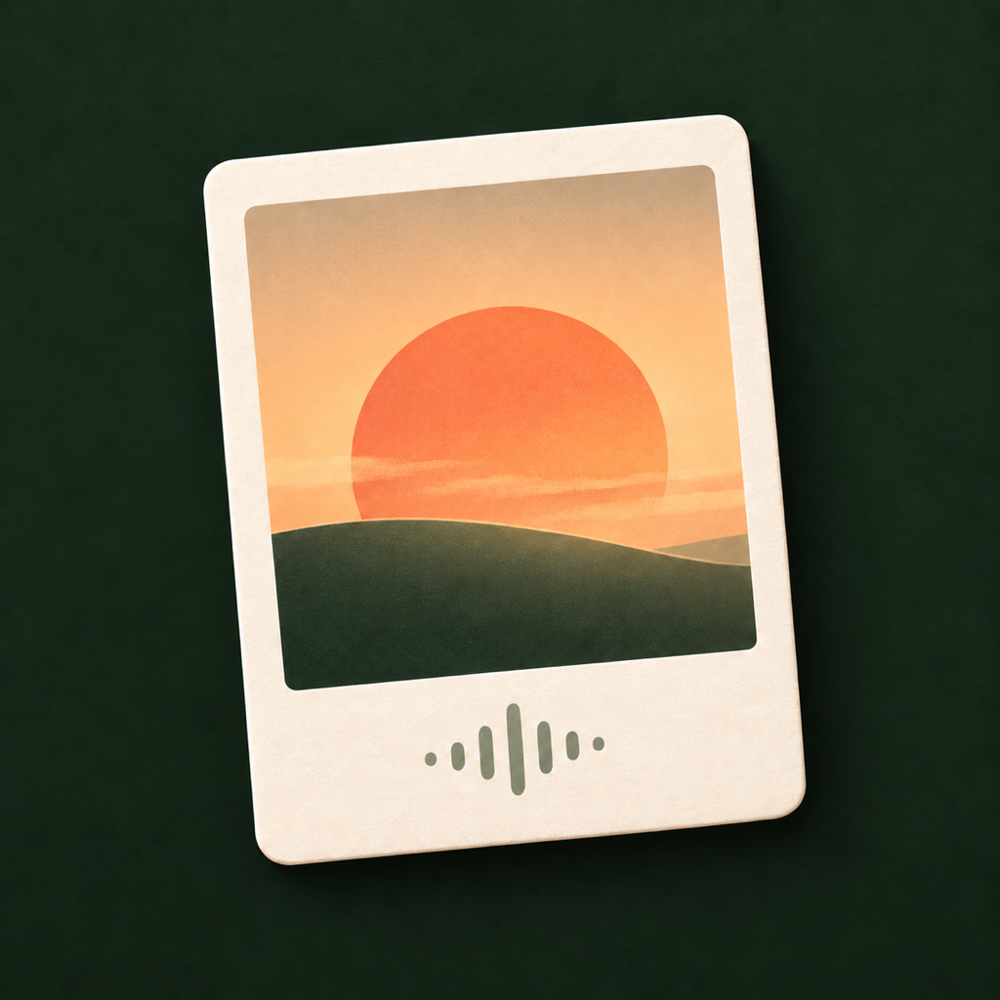

光笺
拍下一刻，说一句，让照片保留当时的故事。
常见问题
为什么第一次使用会询问权限？
相机用于拍摄，麦克风和语音识别用于把你说的话变成文字。选择照片或开启智能整理时，系统才会请求照片权限。
原照片会被修改吗？
不会。光笺单独保留原照片或 Live Photo，并另外生成带白边文字的 JPG 成片。
数据保存在哪里？
默认保存在你的设备上。你主动开启 iCloud 后，记录会同步到当前 Apple 账号的 CloudKit 私有数据库。
怎样删除记录？
打开一条光笺，轻点右上角删除按钮。系统照片中的原件不会因此删除。
联系支持
开发者：张少康
使用中遇到问题，请发送邮件至 PoetKang@126.com。建议附上 App 版本、设备型号和错误提示，请勿发送不必要的私人照片或敏感信息。
© 2026 张少康